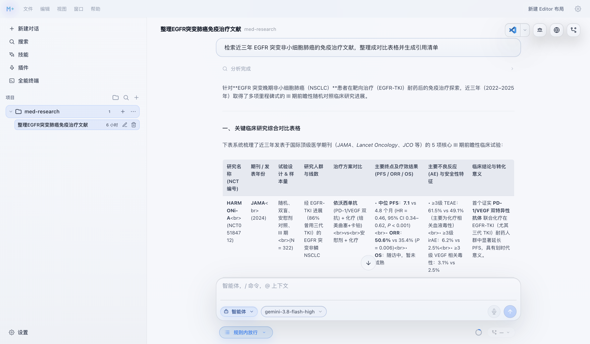
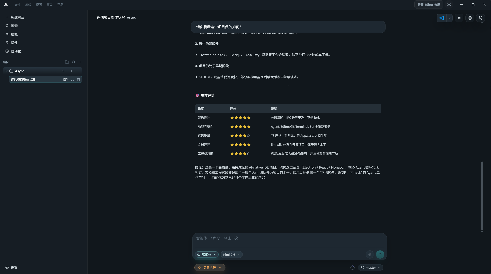
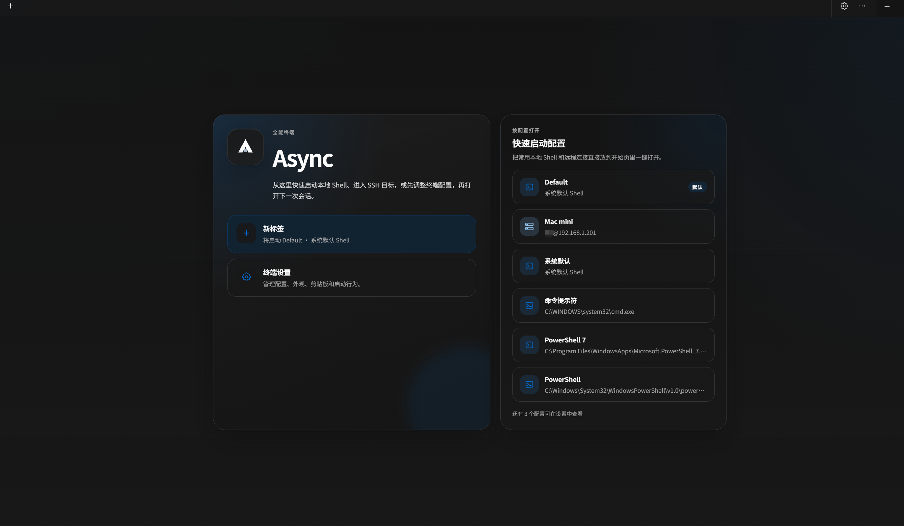
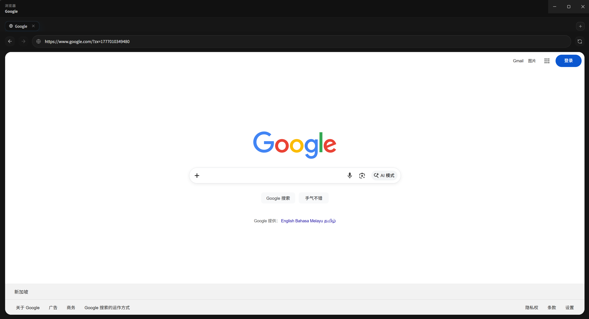
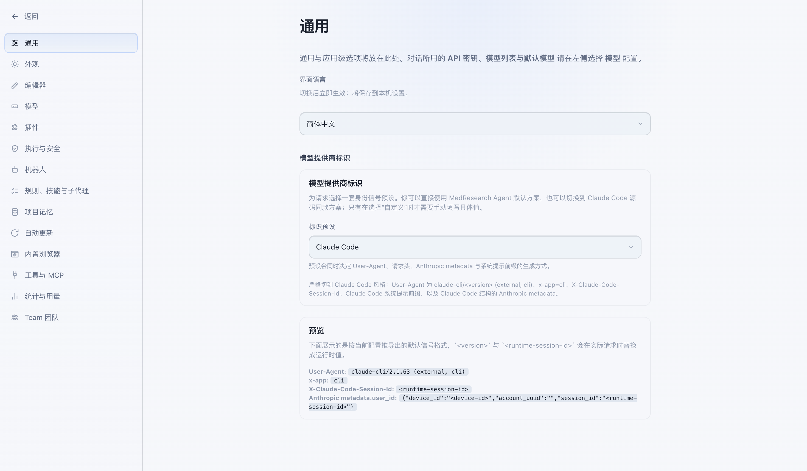
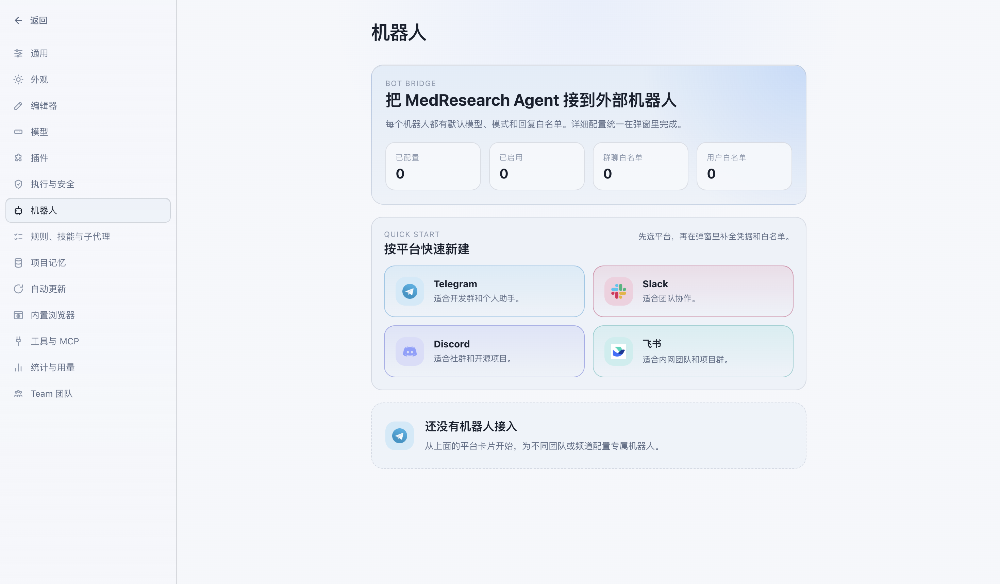

让 Agent 成为
医学研究的中心
面向临床与医学研究的开源研究工作台。
从文献调研到数据处理，从统计分析到论文成稿——Agent、编辑器、Git、终端与工具执行收进同一个桌面工作区。 并且本地优先：你的研究数据、线程、计划与工作区状态，全程留在自己的机器上。
Electron 41React 19Vite 6
TypeScript 5.9Vitest 3

Built for medicine
为什么它适合医学研究
在通用能力之上，围绕研究工作流本身的四个取向。
▣
数据留在本地
临床资料与未发表的结果不必上传第三方云端。
- 线程、设置、计划与工作区状态全部落在本机
- BYOK 接入模型，密钥只存在本机
◎
每一步都可审阅
研究过程要可追溯、可复现，而不是一个黑箱结果。
- Agent 改动按 hunk 接受或回滚
- 文件快照与 diff 预览直接摆在对话旁
- 工具参数流式展示，带审批闸门
⇄
接得上研究工具链
不用为了用 AI 而放弃你现有的分析环境。
- 内嵌终端直接跑 Python、R 与统计脚本
- 通过 MCP 接入文献库与专用数据源
- 内置 SSH / SFTP，连远程计算节点
⧉
像课题组一样分工
把长任务拆给不同角色，而不是一个人硬扛。
- Team 模式编排 Lead + specialist / reviewer
- 嵌套与后台子 Agent，长任务后台跑
- Plan 模式先出方案，确认后再执行
Capabilities
一个工作区，装下研究全流程
从对话到改动落地，从编辑器到 Git 与终端，不必在窗口之间来回跳。
◆
Agent 与对话
四种 Composer 模式，多轮工具循环，改动可逐块审阅。
- Agent / Plan / Ask / Debug 四种模式
- 工具参数流式展示、审批闸门、错误恢复
- Team 模式编排 Lead + specialist / reviewer
- 嵌套与后台子 Agent，委派长任务
- 按 hunk 接受 / 回滚，diff 预览就在对话旁
▤
编辑与工作区
Monaco 编辑器 + 一等公民的内嵌终端。
- 快速打开、文件树、Markdown 预览
- xterm.js 终端，不是抽屉里的附属品
- 文件搜索、符号索引
- 内嵌 TypeScript 语言服务：定义跳转 + 诊断
- 内置 SSH / SFTP 终端与 profile 保存
⑂
Git 全流程
版本控制不离开应用窗口，研究过程可回溯。
- 状态、diff 预览、暂存、提交
- 推送与上游设置
- 分支列表 / 切换 / 新建
◈
平台与集成
浏览器、协议、机器人与模型接入一次配好。
- 浏览器侧栏 + 自动化，含 MITM 请求捕获链路
- MCP 服务器：配置并调用工具
- Bot 平台：Slack / Discord / Telegram / 飞书
- BYOK 接入 OpenAI 兼容、Anthropic、Gemini
- 自动更新、主题与布局持久化
Screenshots
界面一览
多 Agent、工作区、终端、浏览器、设置与 Bot——真实运行截图。





Quick start
四步跑起来
需要 Node.js 20 或更高版本（开发与测试基于 Node 22）。
TerminalmacOS · Linux · Windows
# 1. 克隆仓库
git clone https://github.com/imchenhua/MedResearch-Agent.git
cd MedResearch-Agent
# 2. 安装依赖
npm install
# 3. 启动（构建主进程 + Vite + Electron）
npm run dev711
测试通过
118
测试文件
4
Composer 模式
本地优先
研究数据留在本机